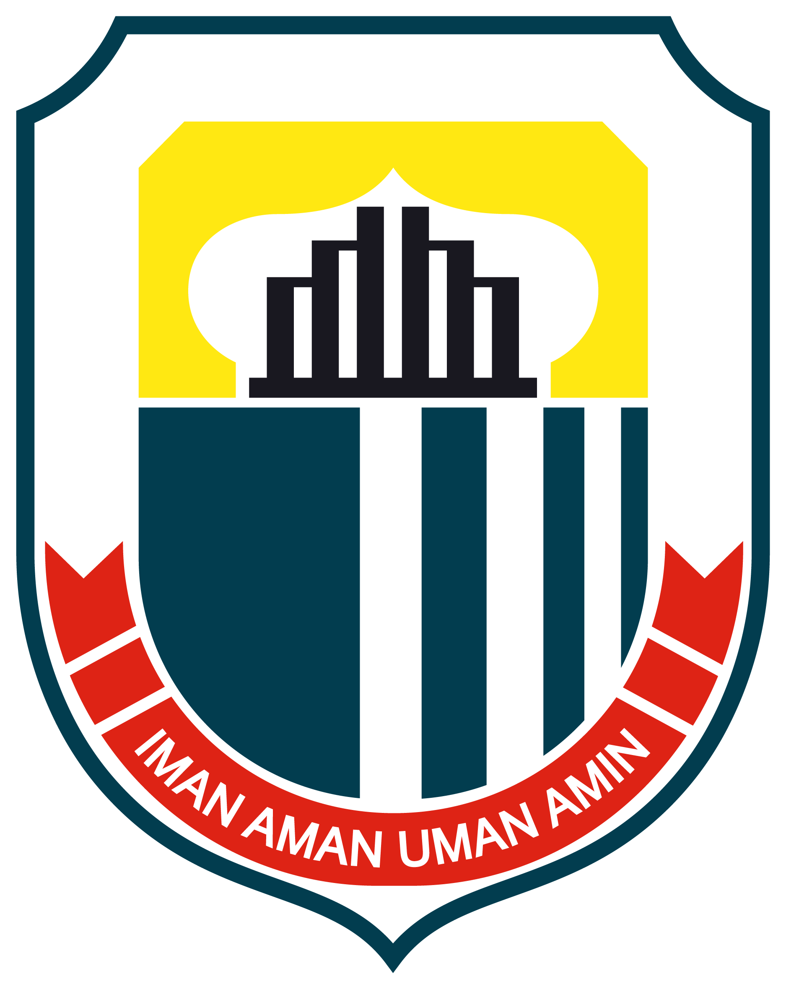

<!DOCTYPE html>
<html lang="en">
  <head>
    <meta charset="UTF-8" />
    <meta name="viewport" content="width=device-width, initial-scale=1.0" />
    <title>Wisata Terpadu Bendungan Karian</title>
    <link rel="stylesheet" href="footer.css" />
    <link rel="stylesheet" href="normalize.css" />

    <link rel="preconnect" href="https://fonts.googleapis.com" />
    <link rel="preconnect" href="https://fonts.gstatic.com" crossorigin />
    <link
      href="https://fonts.googleapis.com/css2?family=Lora:ital,wght@0,400..700;1,400..700&family=Poppins:ital,wght@0,100;0,200;0,300;0,400;0,500;0,600;0,700;0,800;0,900;1,100;1,200;1,300;1,400;1,500;1,600;1,700;1,800;1,900&display=swap"
      rel="stylesheet"
    />
  </head>

  <!-- NOTE FOR DAVID
    Hi david, file ini isinya footer doang, nanti tinggal di copy paste, sama file footer.css ke main file pas nanti udh jadi semua websitenya. aku bikin disini biar lebih rapih aja sih hehe. thank you ya! -->

  <footer>
    <div class="kontak-desa">
      <h2>Kontak Desa</h2>
      <p>
        desapasirtanjung@gmail.com <br />
        Instagram: @pasirtanjung.lebak <br />
        +62 12345678910
      </p>
    </div>
    <div class="kantor-desa">
      <h2>Kantor Desa</h2>
      <p>
        Pasirtanjung, Kec. Rangkasbitung, Kabupaten Lebak, Banten 42312
        <br /><br />
        Jam Kerja: Senin s.d Sabtu: 09.00-17.00
      </p>
    </div>
    <div class="logo-desa">
      
      
    </div>
  </footer>
</html>
